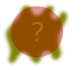

Select a Map:
Load Map
X

Parece que hay una huella en esta pista para descubrirla resuelve el siguiente problema. Los siguientes items estan desordenados. Ordenalos para poder descubrir la pista.
Mejorar Brillo
Modificar Contraste
Difuminar